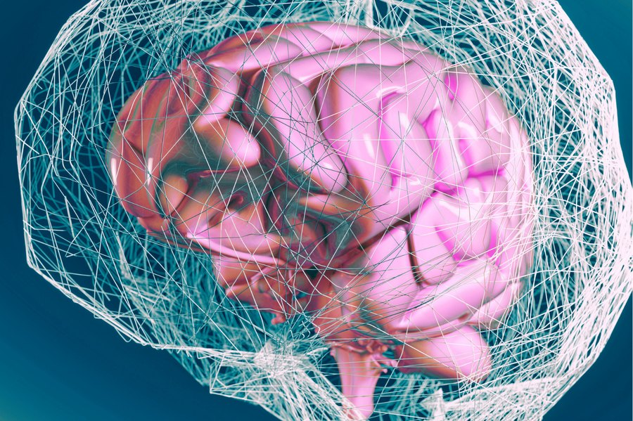

Determining the mechanisms of temporal context recovery in autobiographical memory
Episodic recollection depends on recovering not only the content of an event, but also its temporal context. Retrieved-context theories predict that recalling an episode reinstates its encoding context and thereby biases recovery toward temporally adjacent events. However, this key prediction has only been tested in highly controlled, lab-based experiments that lack the rich personal context of autobiographical memory. This project uses HippoCamera to test retrieved-context predictions in real-world autobiographical memory, first behaviourally in healthy adults (data collection nearing completion), and then in epilepsy patients implanted with the NeuroPace RNS system to examine the neural mechanisms. To our knowledge, this is the first study to directly test retrieved-context mechanisms in real-world autobiographical memory.